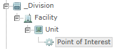
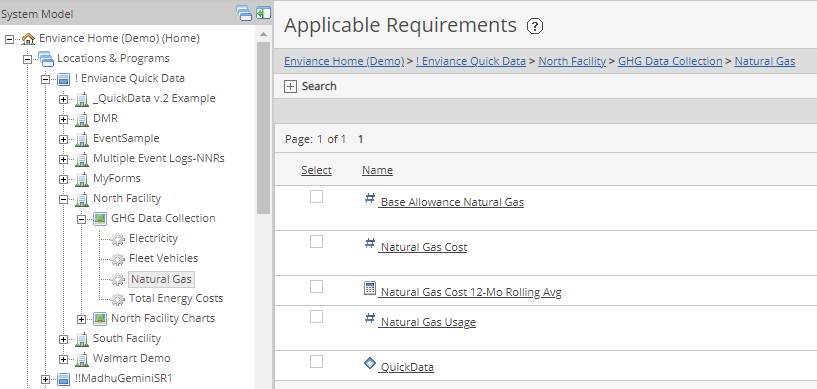

The System Model is a customizable hierarchy that allows a company (or business unit) to create a model of its own business and compliance information and tracking needs. The organization’s regulated facilities or divisions are represented visually in the Locations & Programs section of the System Model.
Four container objects are used in the System Model tree:
These container objects are used to organize the types of obligations you want to track in the system. They may represent actual physical entities (such as a production plant or part thereof) or various regulatory program areas (such as air quality requirements or Title V permits).

When you select a object in the System Model tree, its Applicable Requirements are displayed on the right.

Requirements represent the compliance obligations.
Event Logs are used to 1) store information about potential deviations, or 2) to maintain incident, audit or inspection logs. An Event Log is associated with one or more requirements.
The icon associated with each requirement indicates the requirement type:
Non-numeric Requirement
Parameter Requirement or System Variable
Calculated Requirement
Event Log
Calculated Requirements may be of several different types—standard calculations, time based fixed or rolling calcs, or other types. When you hover over the icon, a "tool tip" identifies the calculation type.